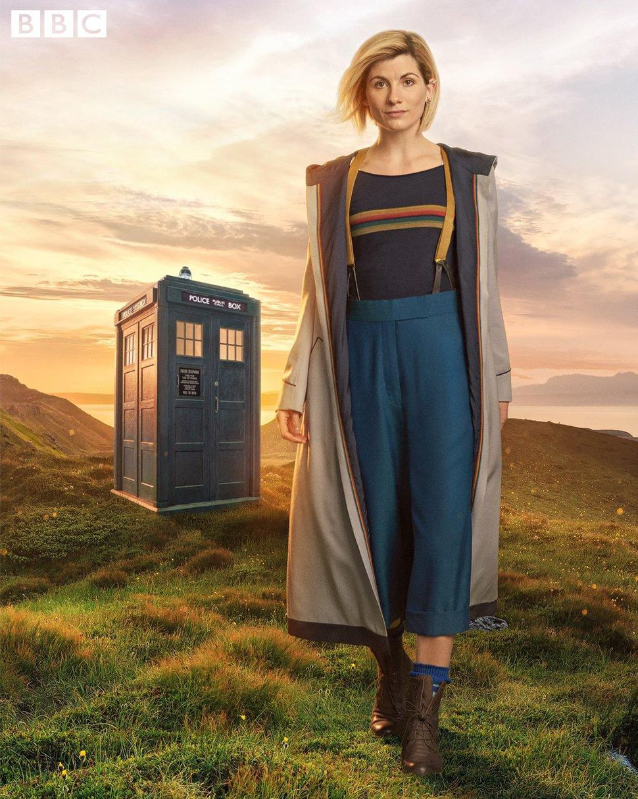

<!--
  Generated template for the FeedPage page.

  See http://ionicframework.com/docs/components/#navigation for more info on
  Ionic pages and navigation.
-->
<ion-header>

  <ion-navbar>
    <ion-title>Feed</ion-title>

  </ion-navbar>

</ion-header>


<ion-content padding>
  <ion-row>
    <ion-item>
      <ion-avatar item-start small>
        
      </ion-avatar>
      <h2 text-wrap>{{about}}</h2>
    </ion-item>
  </ion-row>

  <ion-card>
    <ion-item>
      <ion-avatar item-start>
        
      </ion-avatar>
      <h2>Doctor Who</h2>
      <p>New Year's Special</p>
    </ion-item>
    


    <ion-card-content>
      <p>This year the X-mas Special was replaced by a New Year Special.</p>
    </ion-card-content>

    <ion-row>
      <ion-col>
        <button ion-button icon-start small clear>
          <ion-icon name="thumbs-up"></ion-icon>
          <div>13 likes</div>
        </button>
      </ion-col>

      <ion-col>
        <button ion-button icon-start small clear>
          <ion-icon name="text"></ion-icon>
          <div>11 comments</div>
        </button>
      </ion-col>

      <ion-col center text-center>
        <ion-note>
          10h ago
        </ion-note>
      </ion-col>
    </ion-row>
  </ion-card>
</ion-content>